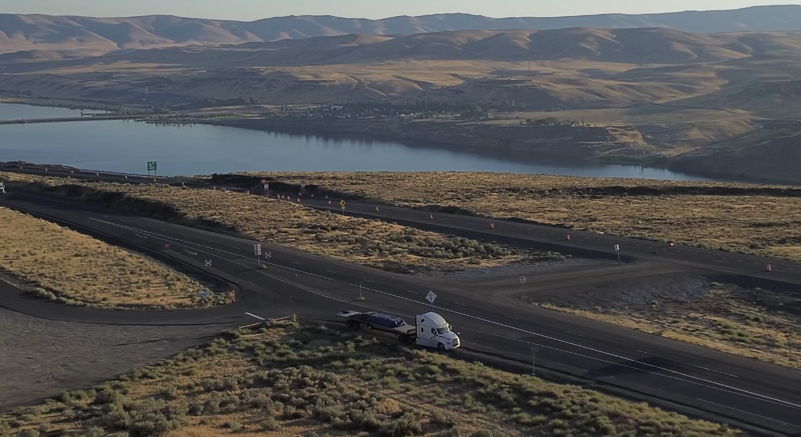

A New Beginning

In December 2017, at just 18 years old, I left India carrying not just a suitcase, but a heart full of dreams and a mind buzzing with hopes. The moment I stepped off the plane in Toronto, reality hit me - the cold was biting, the streets were unfamiliar, and the world felt bigger than what i had ever imagined. I was alone, yet determined, knowing this journey was my first step towards building a life I could be proud of.
Humber College became more than just a school; it became a lifeline. I learnt drafting, design principles, using AutoCad and Revit, and how to think critically about structures and space. But the real lessons came outside the classroom. Working as a security guard while studying full-time was exhausting. Long nights, early mornings, and endless responsibilities tested me in ways I had never experienced. But each struggle made me stronger, independent, and more resilient.
Detours & Determination
When I graduated in 2020, I expected the doors to open. Instead, the world seemed to close. COVID-19 froze the job market, canceled interviews, and left opportunities slipping through my fingers. I remember feeling frustrated, helpless, and doubtful. For the first time since arriving in Canada, I questioned whether I had made the right Choices?
Yet giving up was never an option. I chose a path I had never imagined - I became a truck driver. For two years, I drove across Canada, from the snowy roads of Quebec, to the plain roads of Manitoba, to majestic Rockies of Alberta and finally to the sunrises of British Columbia. Later, I expanded into cross-border trucking to the United States. The highways became my sanctuary, offering quiet moments to reflect, and to rediscover my inner strength.
My journey in trucking has taught me many valuable lessons. It's also how I discovered my passion for photography. Along the way, I created countless memories and captured beautiful sunrises and sunsets across Canada and the United States - moments I truly admire.
I spent a lot of time on my own, which gave me the space to reflect and understand what I truly want in life. Experiencing different parts of the country made me realize that the world is a vast place filled with kind people. It helped me create both sweet and sour memories that shaped who I am today.
During this time, one of my proudest moments arrived - becoming a Permanent Resident of Canada. I still remember receiving that email while visiting my family in Punjab it was overwhelming sense of joy and accomplishment. It was more than legal proof; it was validation of every sacrifice, every sleepless night, and every challenge overcome.
From Driving to Coding
Even with stability, my heart longed for more. I had always been curious about technology - the way lines of code could bring ideas to life, just as architecture shaped physical space. So I returned to Humber College to study Web Development, daring step into a new world once again.
Transitioning from driving to Coding was challenging, yet exhilarating. Debugging code reminded me of problem-solving on the road, and designing user interfaces connected back to the precision I learned in the architecture. Every experience - the struggles, the detours, and the triumphs - felt like pieces of a puzzle finally falling into place.
My journey has never been straight or easy, but it has been mine - shaped by courage, resilience, and determination. From India to Canada, from architecture to trucking, and now to web development - I am proof that reinvention is possible. And today, I continue building my future, one line of code at a time.
Edited on February,2026 by Lovepreet Sandhu
Leave a Comment